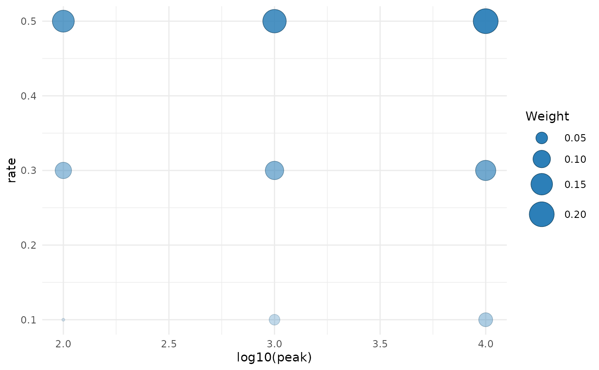

Shows where an estimated or known kinetic population places its mass on two candidate coordinates. Point area and opacity both encode the candidate weight. The function returns a ggplot object, so labels, themes and scales can be changed with ordinary ggplot2 layers.
Arguments
- candidates
A data frame with one row per candidate.
- weights
Non-negative candidate weights. They are normalised to sum to one for display.
- x, y
Names of the candidate columns to plot.
- log10_x, log10_y
Transform the corresponding coordinate to base-10 logarithms before plotting. All transformed values must be positive.
- title
Optional plot title.
Examples
candidates <- expand.grid(peak = 10^(2:4), rate = c(0.1, 0.3, 0.5))
weights <- seq_len(nrow(candidates))
plot_bank(candidates, weights, "peak", "rate", log10_x = TRUE)
